-
FLY WHEEL PULLER
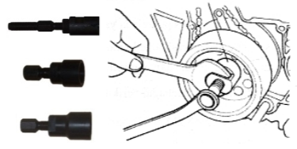
Berfungsi untuk melepas fly wheel
Tersedia berbagai tipe:
- Fly Wheel Puller Combination untuk GL Series dan Cub
- KEH Wheel Puller Combination untuk GL Neotech
- KCJ Wheel Puller Combination untuk Tiger
- NSR Wheel Puller Combination untuk NSR
- Wheel Puller Combination NF125/ND125
Cara penggunaan:
- Tahan Fly Wheel dengan Fly Wheel Holder.
- Kendorkan mur Fly Wheel
- Pasang Fly Wheel Puller
- Lepas Fly Wheel dengan mengencangkan baut pada Fly Wheel Puller.
-
UNIVERSAL HOLDER
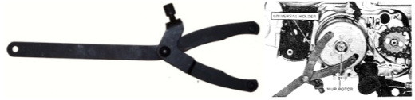
Berfungsi : menahan fly wheel dan rumah kopling ganda (OAPC)
-
FLY WHEEL HOLDER
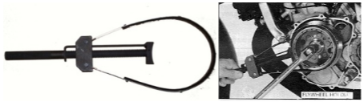
-
LOCK NUT WRENCH
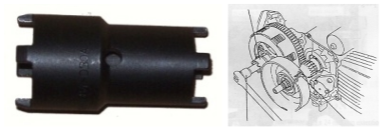
Berfungsi : melepas mur pengunci pada kopling atau pada shaft balancer NSR.
Untuk memutar peralatan ini digunakan : sambungan dan pemegang kunci shock, impact driver atau Impact Wrench.
-
GEAR HOLDER
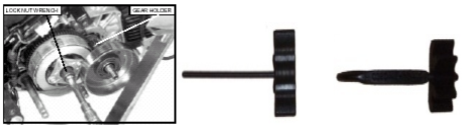
Berfungsi : menahan pergerakan roda gigi rumah kopling (OCC) dan gigi primer/OAPC
-
CLUTCH CENTER HOLDER
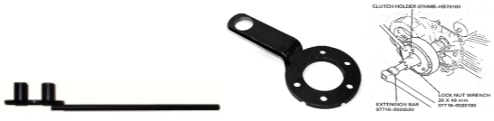
Berfungsi : Menahan OCC saat memasang dan melepas lock nut kopling.
-
VALVE SPRING COMPRESSOR
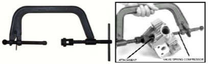
Berfungsi : menahan pegas klep saat melepas klep
-
CRANKCASE PULLER
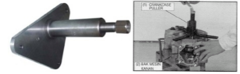
Berfungsi : Melepas Bak Mesin dari Poros Engkol.
Cara Penggunaan :
- Lepas komponen yang terpasang pada ujung poros engkol.
- Pasang Crankcase Puller pada Bak Mesin (Crankcase)
- Lepas Crankcase dengan mengencangkan baut pada Crankcase Puller.
-
ASSEMBLY COLLAR SET
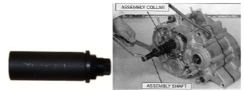
Berfungsi : memasang Crankcase pada Poros Engkol
Cara Penggunaan :
- Pasang Poros Engkol lengkap dengan bearing pada Crankcase.
- Pasang Assembly Collar Set pada Poros Engkol.
- Putar kepala baut pada Assembly Collar Set, sehingga Crankcase akan merapat dan terpasang pada poros engkol
-
UNIVERSAL BEARING PULLER
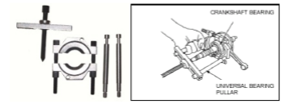
Berfungsi : melepas bearing
-
DRIVER MINUS Z
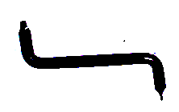
Berfungsi : Melepas Tutup AC Generator dan Tutup Tanda Pengapian
-
VALVE ADJUSTER
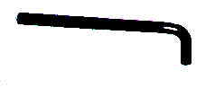
Berfungsi : Untuk menyetel celah klep.
-
DRIVER
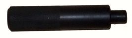
Berfungsi : Pemegang pemasangan bearing
-
PILOT and ATTACHMENT
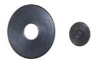
Berfungsi : sebagai landasan pemasangan bearing
-
NIPPLE SPANNER
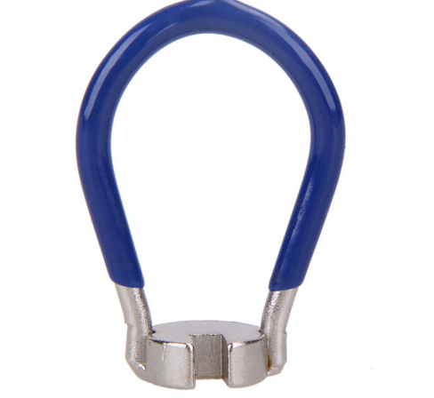
Berfungsi : Melepas dan mengencangkan jari-jari.
-
WHEEL TRUEING
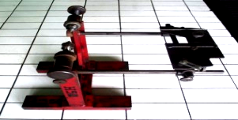
Berfungsi : Memegang roda untuk penyetelan jari-jari.
-
STUD EXCTRACTOR
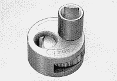
Berfungsi : Melepas baut yang patah dengan kepala baut menonjol
-
SCREW EXTRACTOR
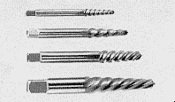
Berfungsi : Melepas baut yang patah dengan kepala baut masuk
Screw extractor adalah suatu alat bantu untuk mengeluarkan baut yang patah, terutama patah di dalam lubang.
Cara penggunaan :
- Digunakan untuk mengeluarkan baut ulir kanan (mengencangkan kearah jarum jam) yang patah.
- Bor baut yang patah, sebaiknya lubang bor tepat di tengah diameter baut.
- Ukuran diameter bor maximum 0.5x ukuran diameter baut yg patah (contoh : diameter baut patah 10mm, max diameter bor 5mm)
- Pilih screw extractor yang sesuai dengan lubang bor tadi.
- Setelah itu masukkan pahat screw extractor ke lubang, dan pukul perlahan dengan palu, sehingga ulir screw extractor mencengkram lubang baut yang patah.
- Sebaiknya dibantu dengan semprotan cairan anti karat, agar karat pada ulir baut yang patah dapat sedikit lunak/terkikis.
- Pastikan cengkraman pahat screw extractor sudah terpasang dengan kuat, putar perlahan pahat screw extractor dengan tap handle, ke arah berlawanan jarum jam.
- Lakukan tahapan di atas dengan penuh perasaan, terutama tahapan No.5 ketika memukul pahat screw extractor dengan palu, bila terlalu keras, diameter baut akan semakin membesar sehingga lebih sulit baut patah untuk keluar
-
CRIMPING PLIER
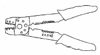
Berfungsi : Mengupas, memotong kabel dan memasang sepatu kabel
-
STETOSKOP
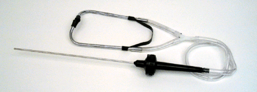
Berfungsi : Mendeteksi suara mesin
-
BRAKE BLEEDER
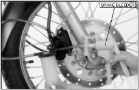
Berfungsi : Membuang angin dari sistem rem hidrolik.
-
KUNCI MOMENT (TORQUE WRENCH)
Uraian
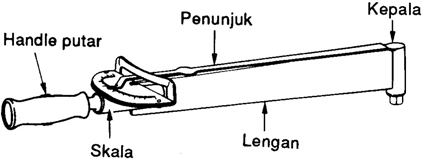
Peringatan Penting:
Kunci moment digunakan untuk mengukur gaya puntir pada baut dan mur, agar mencapai ketegangan tertentu.
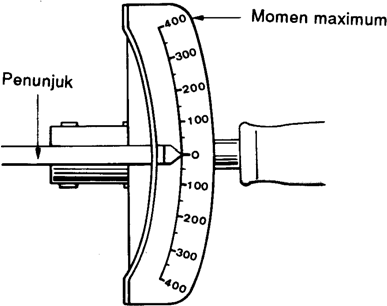
Gunakan kunci moment hanya untuk pengerasan akhir.
Gunakan kunci moment yang mempunyai tingkat moment yang cukup (maximum torque).
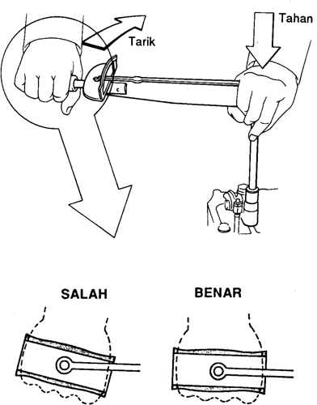
Untuk mencegah agar kunci socket tidak meleset, tahanlah dengan tangan kiri sambil menarik handle, seperti pada gambar.